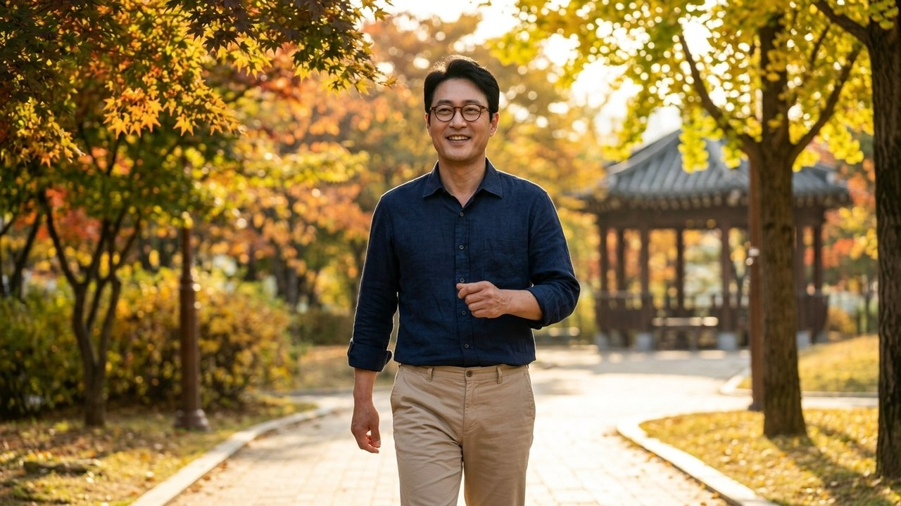
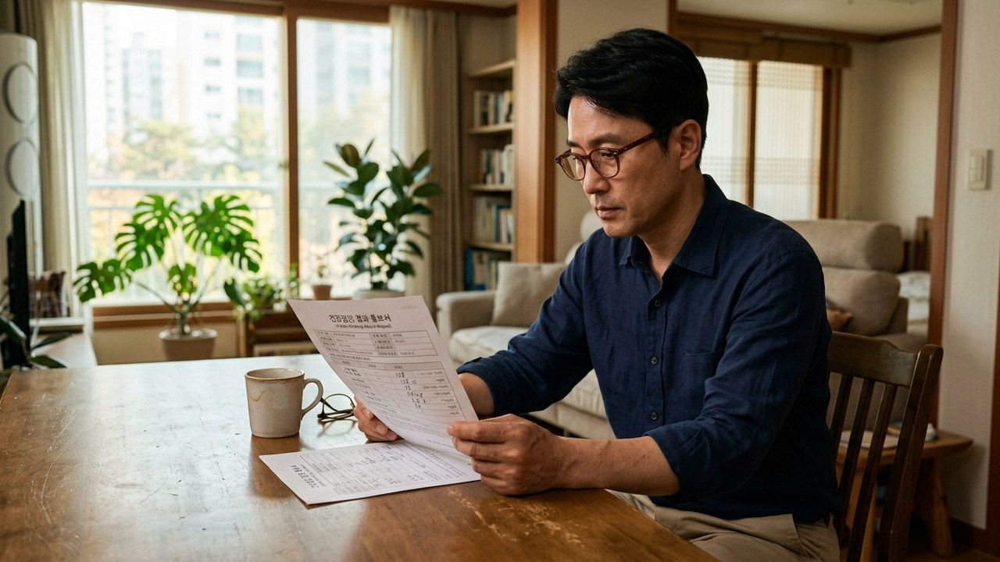
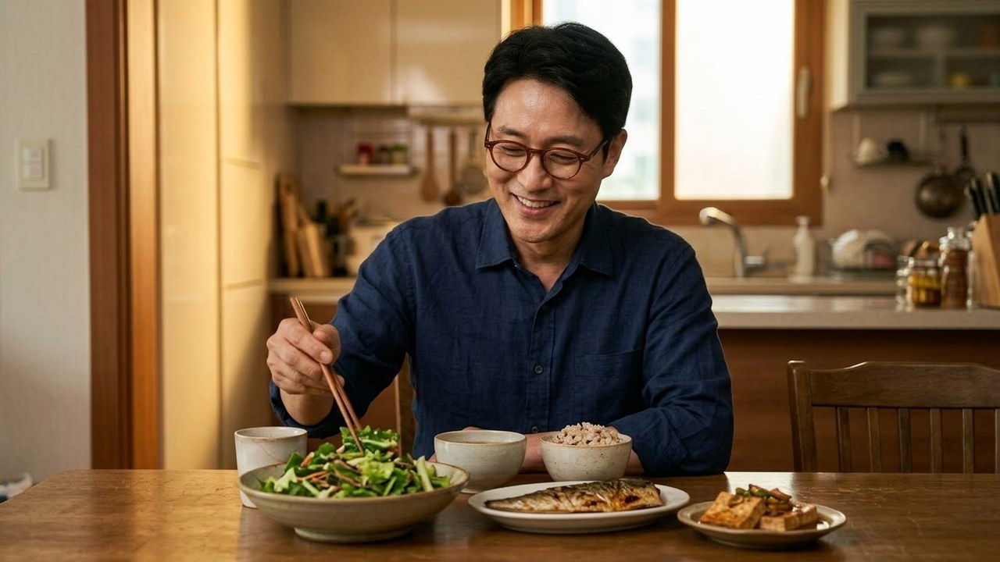
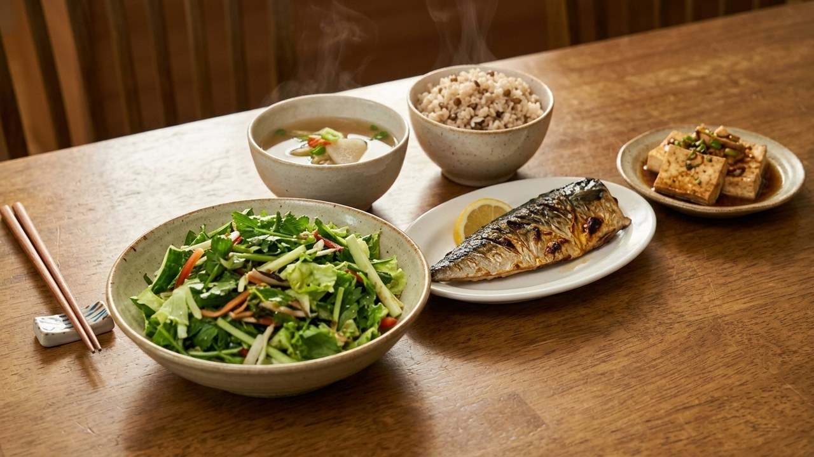

결과표에 빨간 주의 표시가 있으면 평소 먹던 밥부터 걱정되죠.
하지만 한 번 나온 숫자만으로 앞으로의 경과를 미리 정할 수는 없습니다.
정해진 기간 안에 숫자를 되돌리겠다는 목표보다, 다음 상의에 가져갈 정보를 차근차근 준비해 보세요.
공복혈당뿐 아니라 다른 검사 결과와 평소 생활을 함께 보는 과정입니다.

NIDDK가 소개한 비임신 성인의 기준에서 공복혈당 100~125mg/dL는 전단계에 해당하는 구간입니다.
당화혈색소는 5.7~6.4% 구간을 전단계로 봅니다.
두 항목이 모두 높아야만 살펴볼 필요가 생기는 것은 아닙니다.
공복혈당은 검사한 때의 수치이고, 당화혈색소에는 최근 몇 달의 평균적인 상태가 반영됩니다.
그래서 한쪽은 정상 구간인데 다른 쪽에 주의 표시가 있을 수 있습니다.
이때는 어떤 검사를 다시 볼지 의료진에게 물어보세요.
집에서 재는 기기의 숫자만으로 의료기관의 검사 판단을 대신할 수도 없습니다.
검진 당일 몸이 아팠는지, 평소와 다르게 약을 먹었는지 같은 정보도 적어 두면 상의에 도움이 됩니다.
숫자만으로 췌장이 얼마나 지쳤는지 계산하거나, 야식 하나 때문이라고 결론짓지는 마세요.

먹는 순서 하나를 바꿨다고 다음 날 아침 수치까지 일정하게 달라지는 것은 아닙니다.
밥과 반찬, 간식, 달게 마시는 음료까지 평소 모습을 기록해 보세요.
2026년 미국당뇨병학회 관리 권고에는 과체중·비만이 있는 고위험 성인의 체중을 처음보다 5~7% 이상 줄여 유지하는 목표가 나옵니다.
이 내용을 마른 사람까지 똑같이 감량해야 한다는 뜻으로 받아들이지는 마세요.
같은 권고의 활동 목표는 일주일에 중강도 운동 150분 이상입니다.
처음부터 힘든 운동을 몰아서 하기보다, 현재 체력에서 가능한 활동을 나누어 시작할 수 있습니다.
짧은 산책을 시작해도 좋지만 몇 분 걸으면 수치가 정상으로 바뀐다고 약속할 수는 없습니다.
식사를 거르거나 운동량을 늘릴 때 주의가 필요한 약도 있으므로, 복용 중이라면 의료진과 먼저 조정하세요.

자주 인용되는 58%라는 숫자도 개인의 성공 확률은 아닙니다.
NIDDK의 DPP 설명에서는 약 3년 동안 생활습관 중재를 받은 집단의 제2형 당뇨병 발생 위험이 위약 집단보다 58% 낮았다고 합니다.
걷기나 식사 순서 한 가지만의 결과가 아니고, 모든 사람의 수치가 되돌아온다는 의미도 아닙니다.
일부 고위험 성인은 약을 고려할 수 있다는 ADA 안내도 있으므로, 약 없이 해야 성공이라는 부담은 갖지 마세요.
식사 시간을 정리해도 밤에 일정 시간을 굶으면 아침 수치가 내려온다고 단정할 수는 없습니다.
검사 전 준비와 평소 식사 계획은 따로 확인하는 편이 좋습니다.
공복혈당 검사는 최소 여덟 시간의 금식이 안내되지만, 다른 검사가 함께 있으면 물과 약에 관한 준비가 달라질 수 있습니다.
좋은 결과를 얻으려고 임의로 더 오래 굶기보다 검진기관이 알려준 방법을 따르세요.
다음 검사 날짜와 상의할 항목을 기록해 두고, 그 사이 실천할 작은 일을 골라보면 좋겠습니다.

오늘은 확인한 내용 중 내 생활에 맞는 작은 실천부터 골라보세요.
다음 확인까지 식사 기록부터 시작할까요, 평소 걷는 시간을 먼저 적어볼까요?
댓글로 평소 습관을 편하게 남겨주세요.
자료 대조·수정일 2026년 9월 14일. 아래 연도는 원문 발표·검토 시점입니다.
NIDDK, Diabetes Tests & Diagnosis / Diabetes & Prediabetes Tests — 검사별 기준과 결과 확인 안내.
ADA, Prevention or Delay of Diabetes and Associated Comorbidities: Standards of Care in Diabetes—2026 — 개인별 생활 관리와 약물 고려.
NIDDK, Diabetes Prevention Program (DPP) — 약 3년간 집단 간 발생 위험 비교.
NIDDK, Healthy Living with Diabetes — 식사·활동과 복용약에 따른 주의 안내.
#공복혈당 #당화혈색소 #공복혈당100 #공복혈당125 #검진결과 #혈당관리 #식사기록 #운동기록 #검사준비 #생활습관 #에디터혀니 #꿀단지